64. Про сертификацию RHCSA
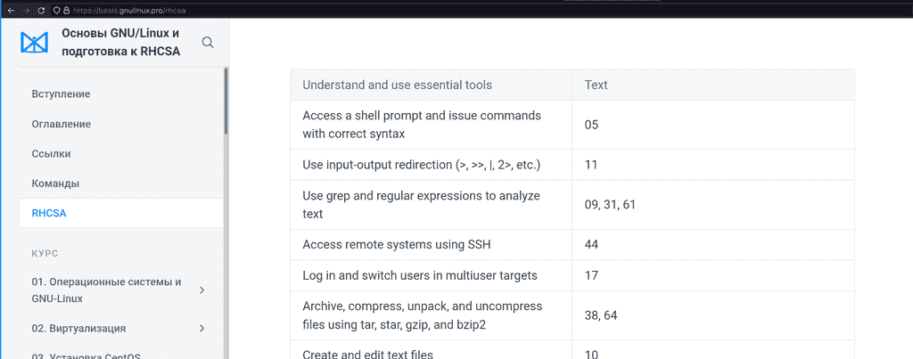
Хотя изначальная идея курса была в подготовке к сертификации по RHCSA, но ещё до первой темы я решил, что если уж и делать курс с простыми темами, то лучше сразу делать его для начинающих и затрагивать все основы работы с GNU/Linux. Ну а подготовка к экзамену осталась как путеводитель, как доказательство того, что этот курс привёл нас к каким-то ощутимым результатам. И что теперь у нас хватает знаний для получения сертификата, признанного во всём мире, показывающего, что мы можем администрировать Red Hat Enterprise Linux. Этих знаний хватит для начала работы младшим специалистом и они дадут фундамент для дальнейшего роста.
Но на этом данный курс не закончится, я буду продолжать добавлять в него новые темы. Но и не думаю, что в принципе хоть как-то можно завершить курс, потому что тема основ бесконечная. Давайте лучше поговорим про сертификацию.
Один из частозадаваемых вопросов:
Нужна ли мне сертификация? Что она мне даст?
Суть не в том, что вы пойдёте и сдадите экзамен. Вы этого можете не делать, это не так важно. Главное - подготовка к нему, получение знаний. Когда вы не знаете какую-то тему, скажем, как администрировать линукс, вам очень сложно понять, а что именно нужно изучать и какой уровень знаний считается достаточным и общепринятым. И вот крупнейшая компания даёт перечень тем, которые считает необходимыми для понимания. На самом деле этот список можно оспорить, каких-то тем не хватает, какие-то темы можно выкинуть, но в целом указаны почти все важные темы для уровня младшего специалиста. Что даёт вам сертификация? Понимание, в каком направлении двигаться. Экзамен лишь доказательство того, что вы этот путь прошли. Но вам не обязательно кому-то это доказывать. Экзамен стоит немало денег, несколько сотен долларов. Некоторые компании оплачивают экзамены за сотрудников, поэтому мой совет - если у вас нет работы, не нужно тратиться на сам экзамен. Экзамен даст вам бумажку, возможно, это чуть улучшит ваше резюме, но это далеко не решающий фактор и адекватный работодатель будет оценивать по уровню знаний, а не по бумажкам. А вот если вы работаете, если компания готова оплатить вам экзамен - то да, стоит его сдать. Вам это обойдётся бесплатно, а ваш работодатель может чуть поднять вам зарплату, ну или по крайней мере ваше CV станет чуточку лучше.
Другой вопрос:
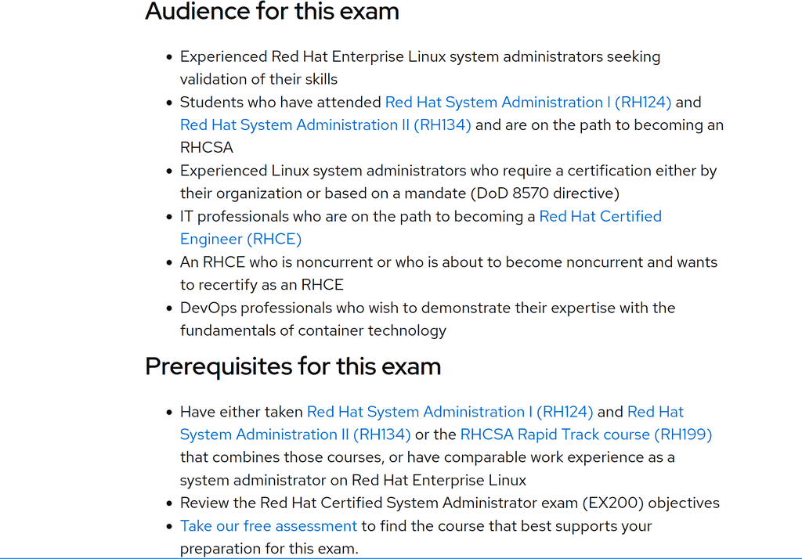
Для кого предназначена сертификация, кому стоит идти и сдавать экзамен?
В идеале - для младших линукс администраторов, которые отработали год, набрались знаний, практики и решили их доказать. А также для тех, кто раньше работал Windows администратором, а потом решил изучить администрирование Linux-ов. В общем, для людей, у которых есть небольшой опыт за плечами. Но я нередко вижу, что на экзамен идут люди, которые только хотят устроиться на свою первую работу, мол, сертификат поможет с устройством на работу.
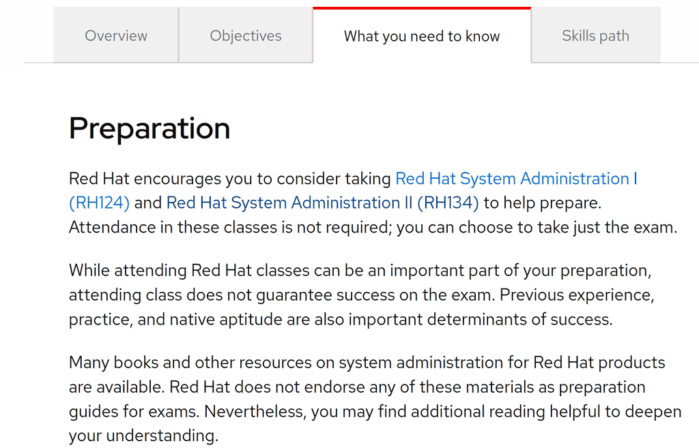
Что из себя представляет экзамен?
Экзамен практический, т.е. вам дадут компьютер и задания. Всё будет на английском, поэтому нужно уметь читать и понимать задания. У вас не будет интернета, но будет системная документация, т.е. man будет работать. Какого рода будут задания нельзя разглашать, но все темы есть на сайте. Вы можете выполнять задания любыми способами - хоть через терминал, хоть через графический интерфейс, хоть через веб. По итогу всякие скрипты проверят именно результат. И самое главное - проверка будет после перезагрузки, т.е. ваша система после всего должна запуститься и ваши изменения должны в ней остаться. Экзамен длится 3 часа, но времени хватает впритык. Скажем, если вы уверенно будете делать без всяких затыков все задания, у вас останется максимум минут 30-40. Естественно, не всё будет гладко, поэтому это лишнее время вам пригодится. Максимальный балл - 300, а проходный - 210, т.е. где-то пару заданий вы можете не выполнить, но старайтесь делать всё, мало ли где-то будут ошибки.
Какие советы по экзамену?
Во-первых, когда вам дадут задания, прочтите их все и суммируйте для себя. Некоторые задания могут быть связаны с другими и если вы тупо будете делать их по порядку - то в какой-то момент вам придётся всё переделывать, а на это нет времени. Во-вторых, начните с тем, которые могут повлиять на запуск системы. Скажем, работа с дисками и файловыми системами. Если вы всё испортите в начале, будет время всё исправить. Если же вы всё испортите сделав половину заданий, у вас не хватит времени всё восстановить. В-третьих, периодически, раз в пару заданий, перезагружайте систему для проверки и убежайтесь, что есть результат выполненных заданий. Да, это отнимает время, но будет легче понять и сразу исправить ошибку. Ну и самое главное - не нервничайте. После экзамена никто вас не побьёт, никто ничего плохого с вами не сделает. Максимум вы потеряете деньги, а это печально. Лучше замените волнения и переживания на печаль по деньгам, так будет проще сконцентрироваться на заданиях и быть более сосредоточенным.
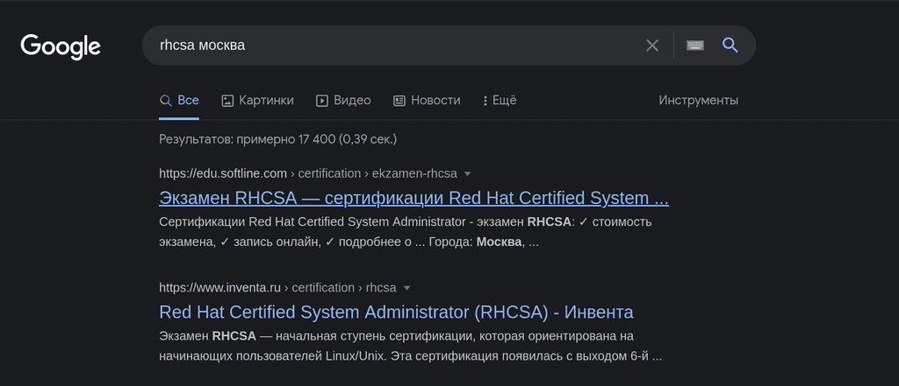
Где сдавать экзамен?
Сейчас есть 2 варианта сдать - оффлайн и онлайн. Оффлайн проводится у партнёров компании Red Hat в разных городах и разных компаниях, поэтому просто наберите в гугле «RHCSA» и ваш город. Там же можно найти или спросить цены. Обычно перед датами экзамена эти компании также проводят быстрые тренинги по поготовке к экзамену. Обычно это занимает неделю или две на полный рабочий день, т.е. некоторые компании оплачивают сотрудникам подобные курсы. Эти курсы не гарантия, что вы сдадите экзамен, но если у вас есть опыт и знания, курсы помогут вам закрыть пробелы перед экзаменом.
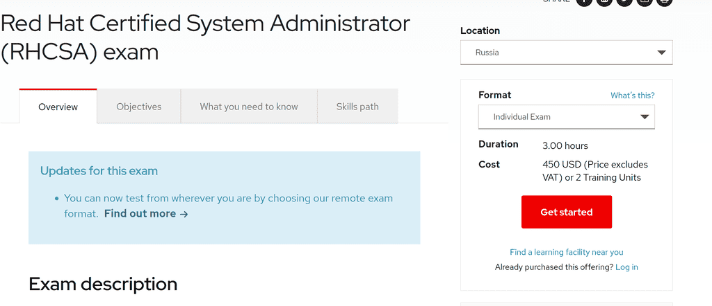
Онлайн экзамен можно заказать на официальном сайте редхата, он выходит дороже, но вы сдаёте его дома. Там есть процедура, что нужно подготовить комнату, загрузочную флешку и прочее. Весь экзамен за вами будут следить с камеры. На мой взгляд, лучше сдавать оффлайн, потому что всякие обрывы в сети и нестабильное соединение могут сильно подпортить вам нервы, а если будете сдавать очно, то за работу всего отвечает компания-организатор. И даже если что-то пойдёт не так, отвечать будет организатор.
А как готовиться к экзамену? Твоего курса хватает для сдачи?
Да, я изначально поставил себе цель сделать полный курс, которого хватит для сдачи экзамена. Сейчас в нём не хватает практических заданий и лабораторных, но я над этим работаю. По ссылке вы можете увидеть, какие темы экзамена в каких уроках разобраны, но я советую посмотреть весь курс для полного понимания. Если вы посмотрите весь курс, ответите на вопросы, сделаете задания и лабораторные - то этого хватит. Для начинающих я бы посоветовал параллельно смотреть какой-то другой курс, потому что вы где-то можете не так понять, что я имею ввиду, а обрабатывая информацию с нескольких источников вы лучше её усваиваете. В любом случае, вы можете задавать вопросы в телеграмм группе.
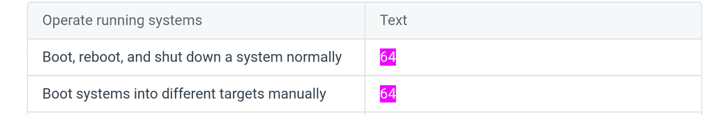
Но есть пара тем, которые остались в сторонке, это пара простых команд, которые я разберу прямо сейчас. Если вы не смотрели курс, то можете пропустить эту часть.
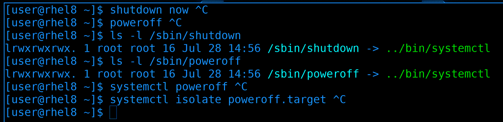
Как правильно выключать компьютер? Есть пара команд:
shutdown now
poweroff
Может где-то на старых юниксовых системах эти команды делали разные вещи, но в современных системах, по крайней мере там где systemd, они делают одно и тоже и являются просто символическими ссылками на systemctl:
ls -l /sbin/shutdown
ls -l /sbin/poweroff
Также для выключения можно использовать сам systemctl:
systemctl poweroff
На самом же деле выполняется команда
systemctl isolate poweroff.target
Мы с вами и systemd и таргеты проходили, поэтому не буду на этом акцентировать внимание. Ну, в общем, можно использовать любую из команд.
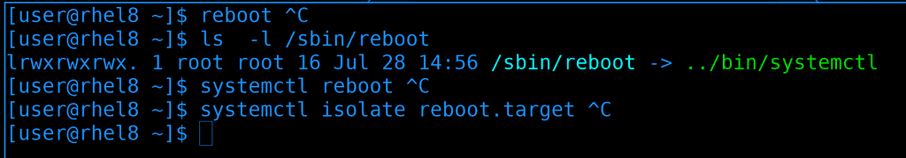
Тоже самое касается перезагрузки, есть команда reboot:
reboot
которая на самом деле является символической ссылкой на systemctl:
ls -l /sbin/reboot
Можно дать перезагрузку через systemctl:
systemctl reboot
А на самом деле выполняется reboot таргет:
systemctl isolate reboot.target
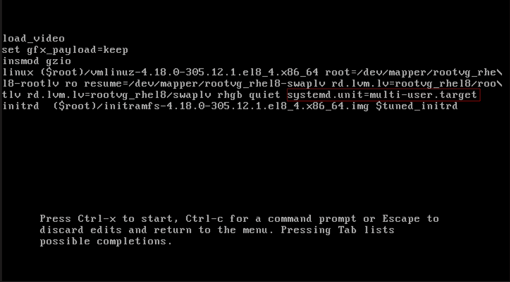
Теперь про загрузку системы в разные таргеты вручную. Тут нужно редактировать grub, мы это умеем. Просто в строке ядра надо прописать опцию systemd.unit с нужным таргетом, например, multi-user:
systemd.unit=multi-user.target
Или rescue.target:
systemd.unit=rescue.target
После чего надо нажать Ctrl+X. Система так загрузится только раз, а после перезагрузки будет как раньше. Как менять таргет навсегда мы разбирали в 34 теме.
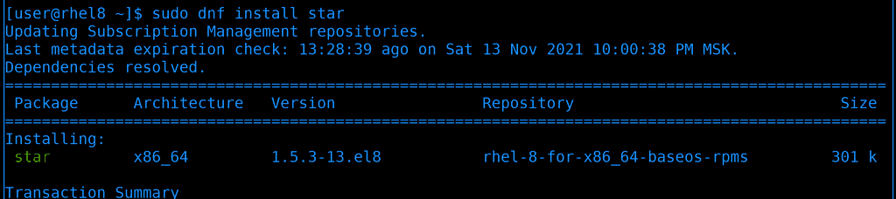
Ну и последнее - утилита star. Это такой же архиватор, как tar, только чуть быстрее и есть дополнительный функционал. Для начала установим её:
sudo dnf install star
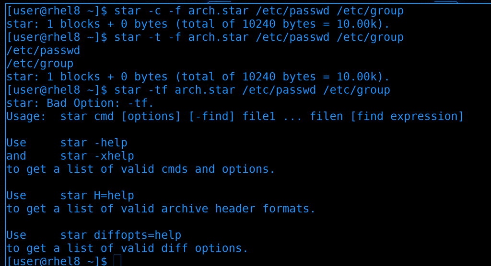
Синтаксис похож на тот же tar:
star -c -f arch.star /etc/passwd /etc/group
star -t -f arch.star /etc/passwd /etc/group
разве что ключи слитно не работают:
star -cf arch.star /etc/passwd /etc/group
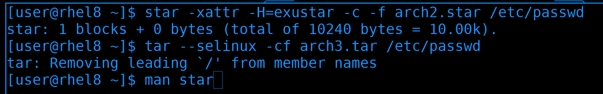
Насколько я понимаю, раньше tar не мог работать с selinux, т.е. при архивации не сохранялся контекст файлов. Этот функционал был в star и поэтому Red Hat требовали знания этой утилиты. Но, честно говоря, синтаксис для сохранения контекста довольно мудрёный:
star -xattr -H=exustar -c -f arch2.star /etc/passwd
Сейчас же tar также поддерживает сохранение контекста и в нём это сделано попроще, просто добавляем опцию –selinux при архивации и разархивации:
tar --selinux -cf arch3.tar /etc/passwd
Ну и больше примеров использования star вы можете найти в документации:
man star
Я не буду вдаваться в подробности этой утилиты, потому что она довольно специфична и я ни разу не встречал практического применения. Просто показал, потому что она прописана в темах экзамена.
Если вы собираетесь сдавать экзамен - удачи вам! Будет интересно послушать комментарии тех, кто уже сдал, да и в целом любые комментарии. Пишите, что думаете о курсе, что вам нравится, что не нравится, вопросы и советы другим. На этом тему подготовки к сертификации можно считать закрытой.